Daryush "Roosh" Valizadeh created ROK in October 2012. You can visit his blog at RooshV.com or follow him on Twitter and Facebook.


She’s the fattest feminist in this roundup. Her crusade to eliminate fat shaming (on Jezebel) is designed so that when Skynet becomes self-aware, she’ll be finally seen as culturally attractive.
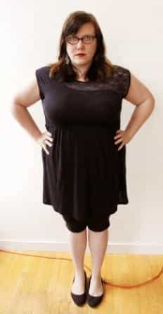
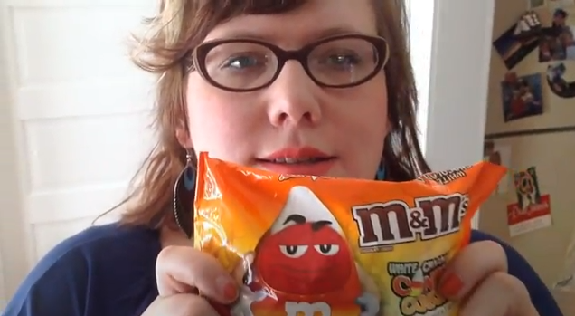
She has achieved mainstream acceptance with her books and articles in the Washington Post and The Atlantic. Surprisingly, she got married, but to a man who was awarded a “beta of the month” prize. She was somewhat attractive for one picture in her life:
But she looks nothing like that now…
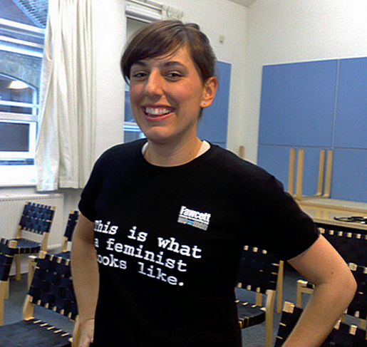
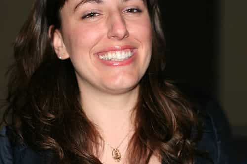
The reason that feminists have large jaws is because of testosterone exposure during pre-natal development. In that case, Amanda must have been supplemented with testosterone via direct injection into the womb.
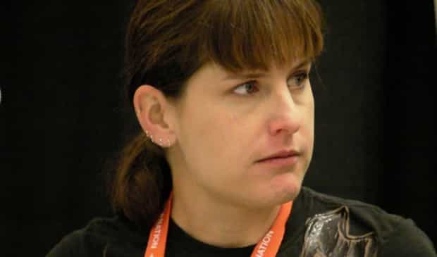
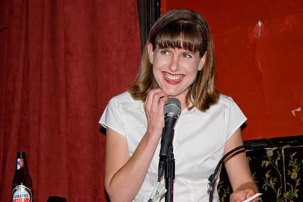
I feel like it’s unfair to pick on the elderly, but such is life. She can be found shaming men on her Washington Post advice column.
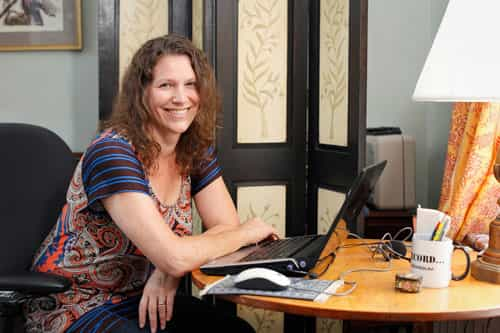

She wrote a book called The End Of Men: And The Rise Of Women. Enough said.
Another senior citizen. She wrote a book called Manning Up: How The Rise Of Women Turned Men Into Boys.
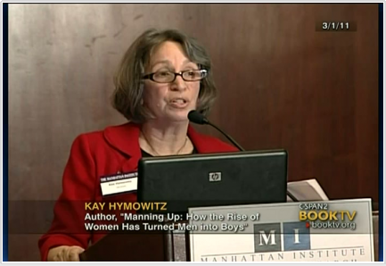
Obama’s useful idiot for the 2012 presidential campaign. She believes the taxpayer should pay for her birth control.
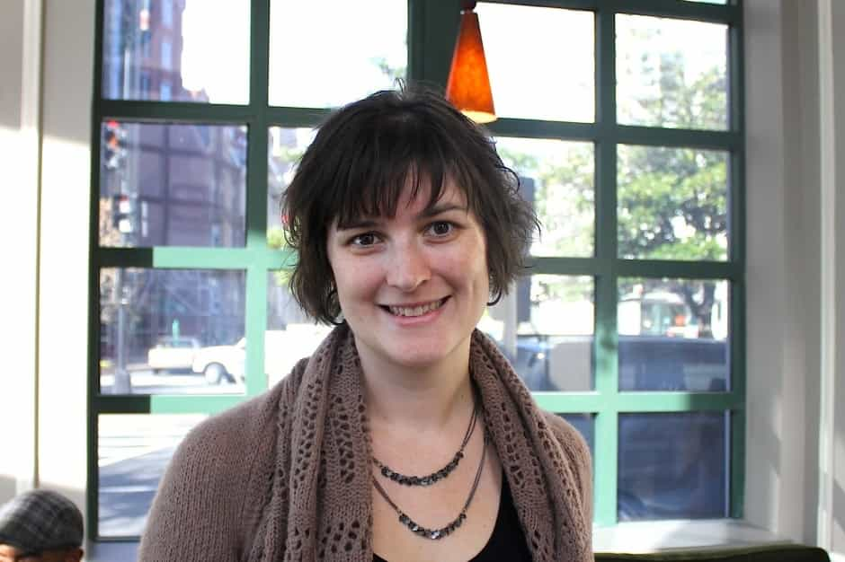
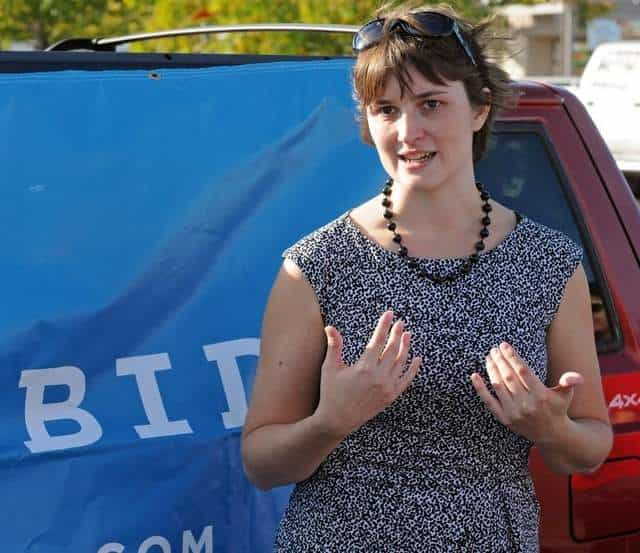
She believes men’s rights activists should go fuck themselves. She also believes that fat shaming is a serious feminist issue. Of course she’s fat.

She’s a popular atheist blogger who puts her science views on hold when passionately discussing feminism. I actually got into a blog war with her last year when she hated on my accurate observation that hyper-educated girls are less feminine.
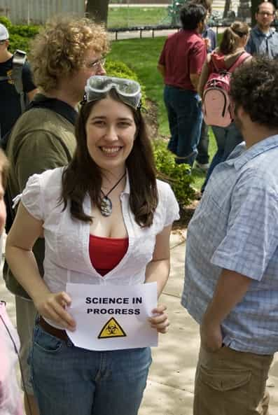
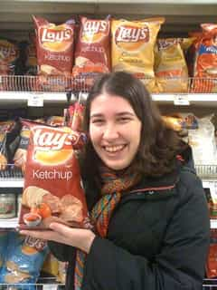
Jen wins our ugliest feminist contest by a wide margin. She’s so ugly that when she looks in the mirror, her reflection looks back and shakes its head. Really though she’s so ugly that when she goes to the therapist, he asks her to lie on the couch face down. No but seriously, no playing around, she’s so ugly that when she wants to practice birth control, all she has to do is turn on the light.
Feminists want to be valued for their brainpower and ideas above all else, but they still engage in professional photoshoots to push the prettiest picture of themselves on their web sites and book jackets. I guess even feminism can’t completely demolish a girl’s desire to be pretty.
 If you like this article and are concerned about the future of the Western world, check out Roosh's book Free Speech Isn't Free. It gives an inside look to how the globalist establishment is attempting to marginalize masculine men with a leftist agenda that promotes censorship, feminism, and sterility. It also shares key knowledge and tools that you can use to defend yourself against social justice attacks. Click here to learn more about the book. Your support will help maintain our operation.
If you like this article and are concerned about the future of the Western world, check out Roosh's book Free Speech Isn't Free. It gives an inside look to how the globalist establishment is attempting to marginalize masculine men with a leftist agenda that promotes censorship, feminism, and sterility. It also shares key knowledge and tools that you can use to defend yourself against social justice attacks. Click here to learn more about the book. Your support will help maintain our operation.
Don’t Miss: 3 American Cities Men Must Avoid At All Costs
{kind=link}